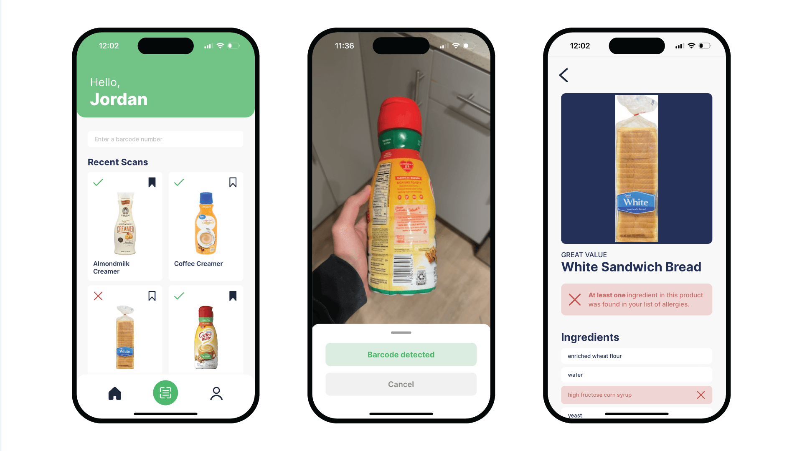

EXPO PROJECT
Shopsafe
Shopsafe is a cross-platform mobile
application I developed as a personal
project that serves as a helpful tool for
anyone shopping in a grocery store. Shopsafe
offers the ability to create a profile of
ingredients that you'd like to avoid due to
allergies, diets, or any other reason. Based
on this, Shopsafe will report whether any
product scanned at the grocery store should
be avoided. Scanning a product will load a
detailed list of ingredients, highlighting
those that you want to avoid. Products can
be saved at any time for future reference.
The GitHub repository below provides a more
detailed overview of Shopsafe’s features and
images of its various screens.
I developed Shopsafe using React Native with an Expo-managed workflow. I took this project as an opportunity to build upon my past experience with Expo and React Native by incorporating more complex logic, state, and features than in the past. In order to learn more about popular technologies in software development, I also integrated Firebase into Shopsafe - a platform that was entirely new to me. Firebase is used to handle authentication and storing user information that is integral to Shopsafe’s functionality.
As the initial development phase of Shopsafe has closed out, I am moving forward with continued testing and readying the app for deployment to the Apple App Store and Google Play Store.
I developed Shopsafe using React Native with an Expo-managed workflow. I took this project as an opportunity to build upon my past experience with Expo and React Native by incorporating more complex logic, state, and features than in the past. In order to learn more about popular technologies in software development, I also integrated Firebase into Shopsafe - a platform that was entirely new to me. Firebase is used to handle authentication and storing user information that is integral to Shopsafe’s functionality.
As the initial development phase of Shopsafe has closed out, I am moving forward with continued testing and readying the app for deployment to the Apple App Store and Google Play Store.
